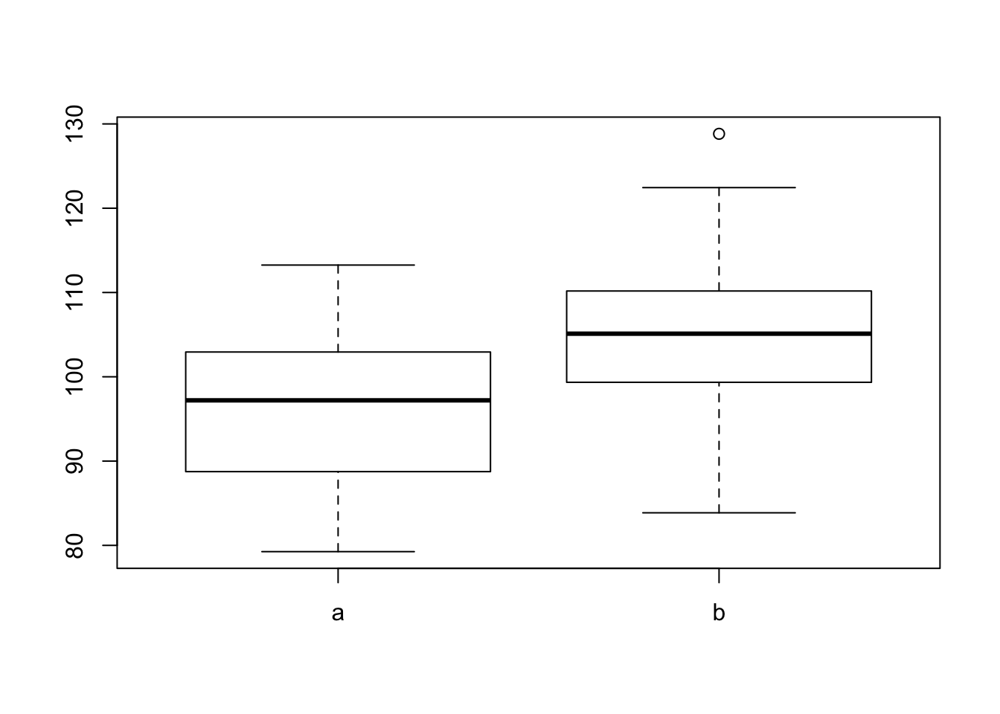

The data contained in the exampleDataPackage R package was analyzed exactly like detailed in this document.
First, because the data is contained in a package, we can easily call it from R
library(exampleDataPackage)
head(exampleData)## group score
## 1 a 97.18260
## 2 a 86.87440
## 3 a 107.95184
## 4 a 102.70070
## 5 a 97.22694
## 6 a 94.33976We drew a boxplot:
boxplot(score ~ group, data = exampleData)
And conducted a t-test:
t.test(score ~ group, data = exampleData)##
## Welch Two Sample t-test
##
## data: score by group
## t = -3.1273, df = 57.854, p-value = 0.00276
## alternative hypothesis: true difference in means is not equal to 0
## 95 percent confidence interval:
## -12.761430 -2.800308
## sample estimates:
## mean in group a mean in group b
## 96.58283 104.36370Thank you for reading.